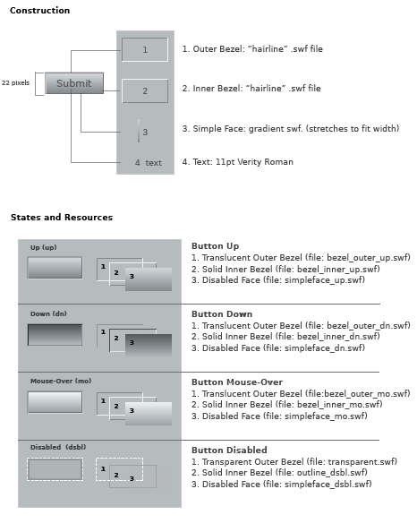

example
LZX Reference
filename: button.lzx
The default component button has a height of 22 pixels and a width determined by the length of the button text and its padding. The button face is 18 pixels tall with 2 pixel borders for the bezels. The type is centered on the button face. The button is comprised of scalable vector resources which enable disproportional resizing without distortion. Resizing the button will not alter the text size. The button can also contain an icon image with or without text included (see Button example in the LPS 2.0 Welcome Page).
The button form is constructed of four views. The views are:
1. The "Outer Bezel" creates an indented area around the button
2. The "Inner Bezel" defines the edges of the button
3. The "Simple Face" is the face of the button.
4. The "Text" for the button label -11 pt Verity Roman
(An icon or image can be used with text or alone.)
Views 1-3 are constructed as multiple frame resources which change based on the state of the button.
The outer and inner bezels (and each of their states) are constructed of a "hairline" .swf file with two different colored strokes on each rectangle. These files were built using the Flash authoring tool, and take advantage of a feature of the .swf file format that is not supported in other vector-based programs (such as Adobe Illustrator). Hairline strokes created in Flash will retain their weight regardless of scaling*. This means that using a size other than the default will not distort the look of the button. Although transparent, the disabled state of the button (which is visually smaller) retains the Outer Bezel to insure alignment with the other resources.
The face view contains a .swf resource which is a vector gradient acting as the face of the button. There are 4 separate files for each of the button states, each with its own gradation and opacity. These files are saved as 1 pixel wide by 18 pixel high (default face height) resources and are scaled horizontally to the width of the button.
*An unfortunate effect of this technique is that a "hairline" only retains its width when decreasing scale. Scaling a "hairline" up will scale the thickness of the stroke. In an effort to work around this, the assets for both outer and inner bezels (and their states) are set at the overly large size of 500x500 pixels.
